Don Quixote is sinner #3 within the LCB, with an official color of "Oblivion Yellow" (#ffef23). Her literary source is The Ingenious Gentleman Don Quixote of La Mancha, or Don Quixote for short. Her misadventures becomes the main focus of canto VII, also known as "The Dream Ending".
Don Quixote per her character poster. She is seen wearing the typical Limbus Company uniform, but she also wields a giant lance and shoes that she call "Rocinante"
Don Quixote
Don Quixote is a book written in two parts by Miguel Cervantes. The first book was published in 1605, and its sequel was published in 1615. Both books describe Alonso Quixano, a member of Spanish nobility, as he tries to become a chivalrous knight based off of the literature that he has read. Before giving the synopsis of the book, it is worth mentioning that the genders of the characters are changed around in Limbus Company, which contrasts Wuthering Heights, and mirrors for Moby Dick, interpretations.
The book begins with a brief introuction of Alonso Quixano, a noble obsessed with stories of chivalery and knighthood, who then acts on his obsession to become a knight errant himself (errant in this case meaning a knight who wanders the land to enact their virtues). He renames himself as "Don Quixote", names his horse "Rocinante", and declares that Aldonza Lorenzo, a slaughterhouse worker, would be his lady love known as "Dulcina del Toboso" (lady love being a lady that a knight errant would act in the name of, as a form of courtly love).
For his first set of adventures, Don Quixote wishes to be formally knighted, and in finding an inn, considers it a castle to which he can have his vigil held. As will be a running theme throughout the book, Don Quixote will misconstrue structures, people and situations to be more akin to those that he has read about in his books, and will interfere without any consideration of the consequences of his actions. In this case, Don Quixote calls two prostitutes at the end "ladies", and after they laugh at him for a while, he gets an audience with the innkeeper, or as he thinks, "the king" of the castle.
After Don Quixote begs for the innkeeper to formally knight him, the innkeeper positions him to stand watch some armor that he put in the horse trough. While he intended this to be a way to have Don Quixote be a circus show for more sane clients, this plan backfires when Don Quixote brawls with two porters who were trying to hydrate their horses. The innkeeper knights him, and sends Don Quixote on his way.
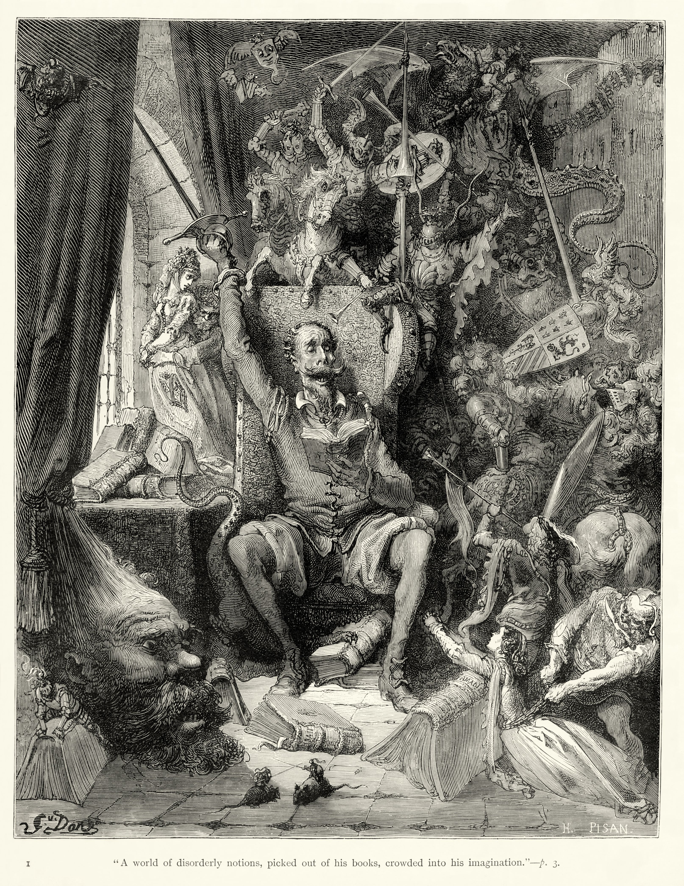
Don Quixote illustrated by Gustave Doré, wherein he is mad from reading his books
The book mainly follows other similar misadventures, as Don Quixote will try to intervene in a situation, be laughed at, be beaten up because he was provoking a fight, or in the worst case, actively make the situation worse for the victim. At the end of his first set of adventures, Don Quixote is beaten senseless for picking a fight with a group of traders, and is brought home by a kind neighbour.
When he returns, we are introduced to his niece, housekeeper, barber and a curate (a curate is an assistant of a parish priest). The group realizes the chivalry books are to blame for Don Quixote's adventures, and burn most of his collection; they keep a few personal favorites for themselves.
Once Don Quixote wakes up, he is told that a magician sealed his room of books, to which he readily affirms. However, his misadventures do not end as he now recruits a neighbour of his named Sancho Panza, and promises governorship when he concludes his knightly duties. They take off without telling anyone again, and come across a windmill. The dichotomy between Sancho and Don Quixote is realized at this point, as Sancho tries to tell Don Quixote that the windmills are just that, while Don Quixote disagrees and believes that they are giants. Don Quixote charges the windmills, unsurprisingly loses, and then Sancho helps him back on his feet. This cycle repeats several more times, with Sancho usually facing more dire consequences for something that Don Quixote did, before he is once again forced to return home, as he thinks he is under an enchantment. This ends the first book
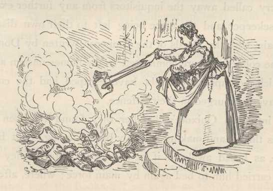
The housekeeper burning all of Don Quixote's books
The second book begins with Don Quixote and Sancho embarking on a quest to undo a supposed enchantment that turned Dulcina into a peasant, although that was a lie made up by Sancho. They continue their usual antics, before they meet a knight who pined for his mistress of Casildea de Vandalia. The Knight of the Wood, as he is dubbed initially, challenges Don Quixote to a duel as he claimed that would be his greatest conquest. He redresses himself in shiny material, and is redubbed the Knight of Mirrors, however he loses the duel. Don Quixote realizes that he's a student from his village called Sampson Carrasco, and Sampson leaves abashedly. Don Quixote chalks this up to be another enchantment though.
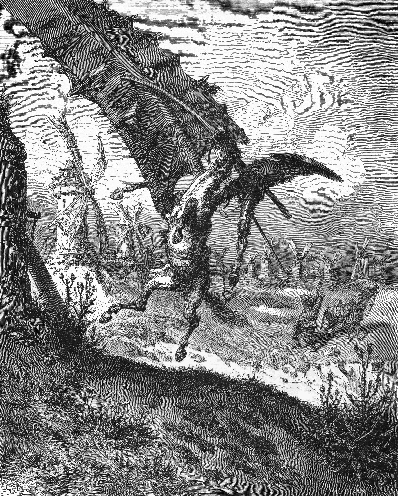
Don Quixote unsuccessfully charging the windmill
The duo then proceed to meet a Duke and Duchess who task them to humiliate themselves for their entertainment, going so far to even bestow land onto Sancho before funding an attack that would see him lose that isle. However, they are able to part ways with the Duke and Duchess relatively safely when it came time for Sancho to abdicate his govenorship. By this point, it should be noted that Don Quixote and Sancho have been basing their decisions in reality more frequently now, and when the matters are not based on chivalry, have thoughtful insights into matters.
The second part nears its conclusion once Don Quixote encounters the Knight of the White Moon, who challenges him to a duel. The conditions of the challenge being that Don Quixote has to stay home for a year if he is defeated. Don Quixote agrees to the duel, but loses. Further on, it is revealed that the Knight of the White Moon is actually Sampson again. By this point, as Don Quixote returns home, it can be noted that Sancho has grown to be significantly more responsible and eloquent than Don Quixote can be right now. In other words, Sancho has a more paternal role towards Don Quixote now.
Once Don Quixote returns home, he announces his retirement, but falls gravely ill for a week. On the last day, he comes back to his senses, and writes his will, before dying. His final ask was that he will be known for disvowing chivalery, and that his niece should never engage with a man who preaches any of those beliefs.
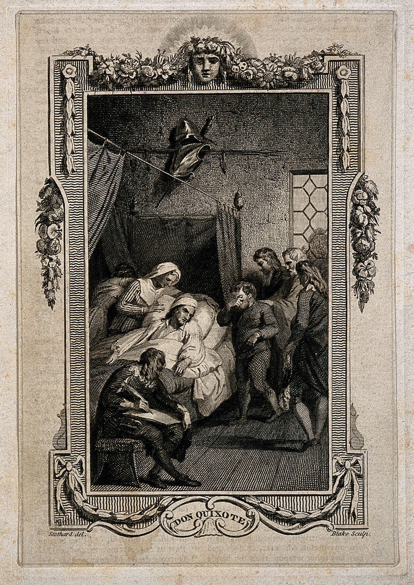
Don Quixote in his death bed, surrounded by his friends and family
Synopsis of Canto VII
Amongst the 3 Cantos discussed on the website, Canto VII proves to be the most disjoint from its source material, partially due to the setting of the city, and also due to role fixers play within the world.
The basis for Canto VIII relies on an understanding of Don Quixote's character, and her actions leading up to this point. In brief, she is initially introduced to be incredibly impulsive and naïve, as she will bring justice to any situation she deems fit. A consequence of this impulisivity was the sinners fighting K corp security guards early on due to her breaking one of the nest taboos in trying to reunite a child with their father; this is the equivalent of picking a fight with a national military force. Another such incident was caused when Don Quixote ventured into one of the doors in the bus' backdoors, which caused her and Heathcliff to be stuck in the Outskirts, and force the sinner team to rescue the two; she only embarked on this venture because she wanted to go on a real adventure.
A key justification she provides for these antics is to say that fixers are vessels for justice, even though in world, fixers are simply specialized contractors that can be hired with allegence to money and whatever loose code of ethics they might have.
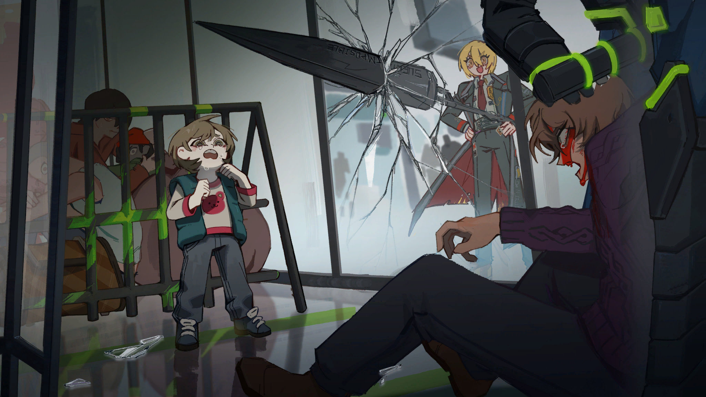
Don Quixote valiently stepping in, despite the consequences that will follow.
When Canto VIII begins, the party finds themselves at P corp, and are tasked with finding the proprietor of an amusement park called "La Manchaland". The amusement park is said to be infested with bloodfiends, which are vampires with a familial structure serving as their hierarchy; the first kindred will always have seniority over a second kindred, and they have seniority over a third kindred and so on. This hierarchy is applicable on a fundamental level as well, as violence against an elder generation is considered taboo for bloodfiends. As a final note on bloodfiends, they are hunted down in the city due to their nature of harming humans, and notable bloodfiends causing their reptuation to sink even lower.
The sinner party begins to explore La Manchaland and find themselves at their first attraction. It narrated the story of La Manchaland while also tracking how many bloodfiends are killed. Don Quixote took great zeal in killing bloodfiends, as she believed them to be a great evil, and easily won. The narrator made themselves known as "The Barber", and on seeing Don Quixote, called her "Sancho", before talking about how she is mad for donning their fathers' name.
After the sinners and "The Barber" fought, another bloodfiend called "Sansõn", who takes "The Barber" to safety and forces the sinners to enact the adventures of Don Quixote. The scenes, in order, was of; the Knight of the White Moon and Don Quixote searching for the river Lethe; Don Quixote saving a village from bandits; and Don Quixote retrieving the Helm of Mambrino.
The sinners move onto the second area, which is a haunted house. Sansõn appears again to narrate the creation of La Manchaland; the theme park was made by a lonely king who condemned his family to unhappiness, and implied that the bloodfiends may have wished for coexistance. The team then meets "The Priest", who again talks to Don Quixote as if she were "Sancho". Before "The Priest" was fought, Sansõn steps in again, and sets up a play recounting the duel between The Knight of the White Moon and Don Quixote, where the knight promised to make Don Quixote's dream come true if she won. After the play ends, Don Quixote isn't sure if that prommise was kept.
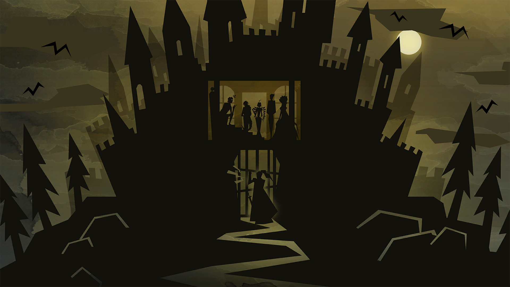
The Knight of the White Moon visiting Don Quixote
In the last major area, the sinners meet Dulcina, who leads the eternal parade as their princess. Once again, she talks to Don Quixote as if she were Sancho, and jabs at Sancho's supposed superiority from their peers, especially after they obtained everything the bloodfiends ever wanted by donning the name of Don Quixote. After a fight ensues and commences, Dulcina would be interrupted from elaborating by Sansõn, who just states that she was gifted with oblivion, which lets her flee from the pain.
Sansõn sets up another play for Don Quixote, where she flees La Manchaland with the knight. They find the river that prophesizes the encounter with Dante, and also the river Lethe, where Don Quixote managed to forget everything in order to dream peacefully. As the scene ended, Don Quixote takes off Rocinante, and reveals herself to be the second kindred, Sancho. A brief dialogue with a first kindred impaled to a ferris wheel with a golden bough reveals that she donned her father's name, Don Quixote. Don Quixote, the sinner, will be referred to as Sancho from this point.
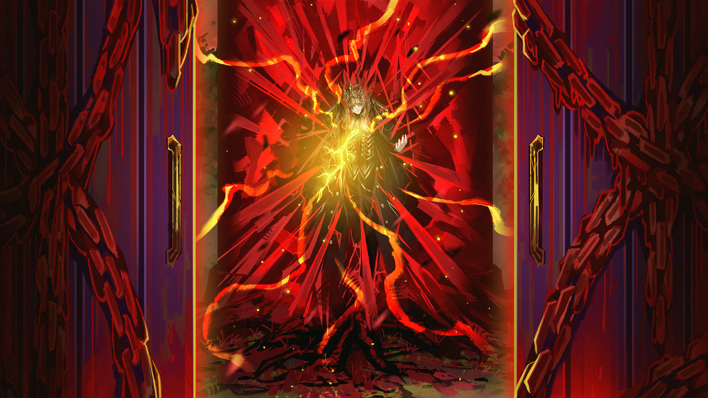
"Now, tell me all about it. That dream of mine...you have dreamed in my stead..."
Sancho affirms to Don Quixote that she has not changed, and this proves him wrong for some unknown reason.
Venturing into a dungeon that formed from the bloodfiends' heightened emotion, the sinners learn of Don Quixote's dream for bloodfiends and humans to coexist with each other peacefully. The origin for which was initially spurred by Bari, a fixer who demanded that Don Quixote pick a side during the bloodfiend wars. She, who was also known as the Knight of the White Moon, promised that she could cure the bloodfiends of their loneliness by promoting friendship.
Through dueling, then becoming confidants, Bari regalled many stories about fixers in the city. These stories pushed Don Quixote to make La Manchaland, and he forebade his progeny from drinking blood or from harming humans, even though this caused his children to suffer greatly. Don Quixote and Sancho also would go out on adventures to become the first true pair of bloodfiend fixers; these adventures were also the same ones that Sansõn had Sancho play out earlier.
Bari and Don Quixote locked in battle when they initially met
Due to the psychological torment that the lack of blood caused bloodfiends, the other second kindred, namely "The Barber", "The Priest", and Dulcina, all plotted to have Don Quixote retrieve the Helm of Mambrino, which would allow them to see Don Quixote as an equal and defy their filia piety; the mutiny would hopefully end the dream that they are suffering from.
The mutiny ended up being successful, as Don Quixote was successfully incapacitated and staked to a ferris wheel. However, he gave Rocinante to Sancho, and against her wishes, ordered her and Bari to leave and carry on his dream of being a bloodfiend fixer.
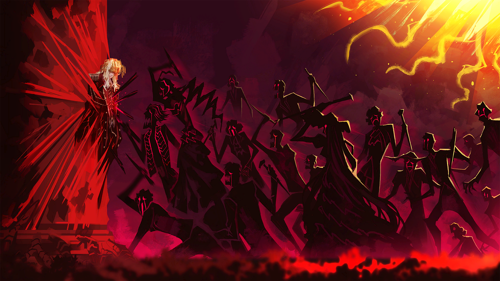
The bloodfiends staking Don Quixote
With Sancho's memories returned, Don Quixote orders her to fight the sinners, which she agrees to because she has no dreams in her life. However, the sinners convince her that the dream has not died yet, as the loneliness of bloodfiends can still be cured with family and friendships. To those points, Sancho agrees to return, although Don Quixote still refuses to let her return, as he fears that she will suffer in pursuit of an impossible dream.
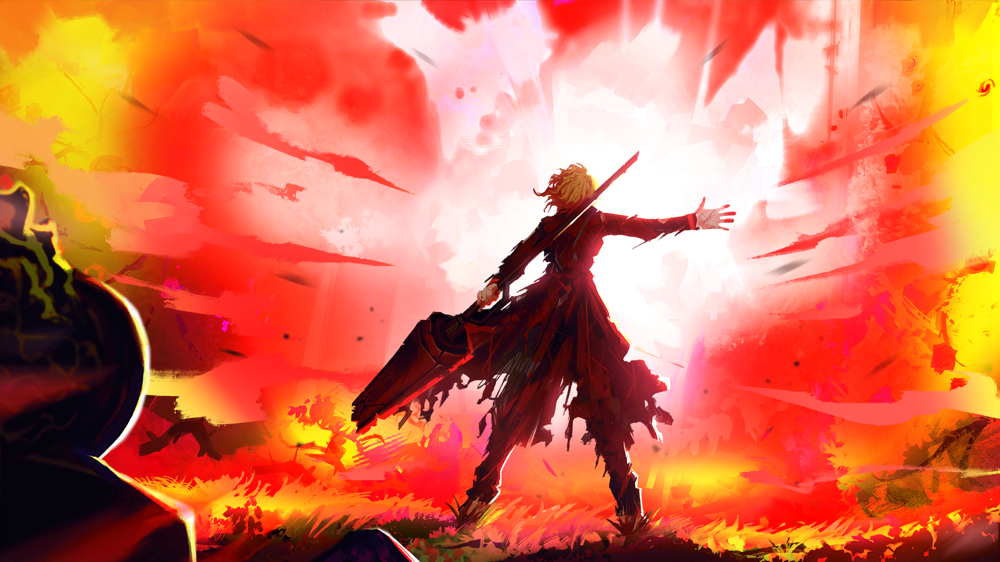
Sancho protecting Dante from a fatal strike from Don Quixote
A fight ensues against Don Quixote, although he overwhelms everyone but Sancho readily. Seeing that they are the only two standing, Don Quixote challenges Sancho to a duel, where they will decide whether the duty to the family is stronger than their dream.
Sancho prevails, fatally wounding Don Quixote in the process. In his death, he names Sancho the new "Don Quixote", and she dons the title of being the new first kindred of the family. Thus concluding the adventures of Don Quixote, first kindred of La Manchaland.
Thematic Differences
Like with Moby Dick, there is a lot of content to unpack here, especially since Limbus Company provides a completely different context for the story to take place.
Bari, the Knight of the White Moon, and Sansõn
In Don Quixote, Sampson played the role of the Knight of the White Moon in order to formally conclude Don Quixote's dream of being a knight errant. Within Limbus Company, this is completely turned on its head as Bari, the Knight of the White Moon within the city, is actually the reason why Don Quixote begins dreaming.
Sansõn on the other hand closely resembles the role Sampson plays by being the one to bring the golden bough to La Manchaland; the bough awaken Don Quixote's thirst for blood, however minescule, which allows the theme park to break past Don Quixote's seals and apparate infrequently, thus letting the bloodfiends feast on whoever wanders in. Sansõn also expresses displeasure for Bari's involvement, as he believes that the dream of coexistence left the Manchigean bloodfiends worse off.
It is worth mentioning that the two characters are still quite enigmatic. Bari helps Don Quixote and Sancho extensively as they navigate the mutiny that the rest of the bloodfiends cause, and Sansõn helps Sancho recover her memories, which in turn allows her to act more mature and thoughtful in the cantos to come. To that extent, it is worth drawing parallels to the way Sampson tried to urge Don Quixote to return to his knightly duties when he was sick, despite being the one to exile him to his house in the first place. Bari, Sansõn and Sampson may persist on the notion that the dream is wholly entertaining to them, and to see the show stop would be its own tragedy. However, in letting the show run, they also resist its continuation due to the consequences it has on them.
The Barber, Priest and Dulcina
The trio of close friends for Don Quixote in both the book and the game are an interesting selection of people. Dulcina is not even a real person in Don Quixote, while the barber and the priest are. While the priest and the barber are generally affected by Don Quixote's antics, either by embarassement or in having to bail him out of being in jail, Dulcina's inspiration in Aldonza Lorenzo was very unaware of his schemes. In Limbus Company however, the trio are direct proginy of Don Quixote, and are directly affected by his ban on attacking humans; they were loyal to their father until the psychological strain grew too painful.
Both sets of characters do share a common theme though, and that's their involvement in trying to get Don Quixote to quit on his dream. For the bloodfiends, that manifested in their usage of the Helm of Mambrino, while the literary versions of the characters tried to use all forms of trickery in order to try and convince Don Quixote to stand down, even if it meant burning his beloved book collection.
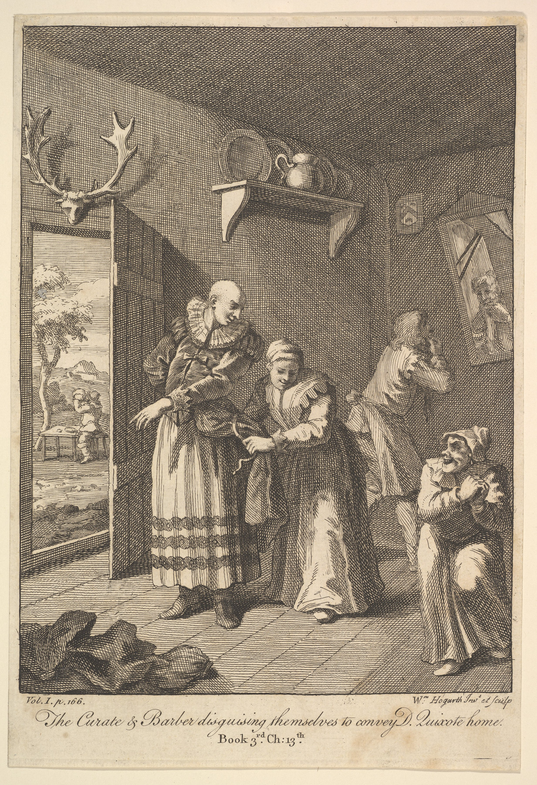
The barber and curate disguising themselves in order to coerce Don Quixote to come home
Don Quixote and Sancho
Don Quixote and Sancho, being the main feature of the book and the canto, have wildly different trajectories, while sharing their dynamics of being foils to each other, and the main theme of doggidly following a foolish, impossible dream. In Don Quixote, Don Quixote's parental role to Sancho also flips by the end of the book as Sancho steps in to solve the conflicts that come their way home; this mirrors how Limbus Company portrays Sancho becoming a first kindred herself in killing Don Quixote, thus "becoming" the paternal figure in the eyes of the bloodfiends.
However, those are the only major similarities between the two medias. For instance, Don Quixote in Limbus Company was not interested in worldly matters, which was seen in his lack of interest in the bloodfiend wars at the time, and only considered Bari's suggestion when she highlighted how it would solve the bloodfiend illness of loneliness, given that they had extraordinary vitality. Similarly, Sancho was not interested in Bari's stories until she heard enough that she gradually inched closer to join in on those conversations, and while reluctant to join Don Quixote's adventures, she treasured those tales greatly.
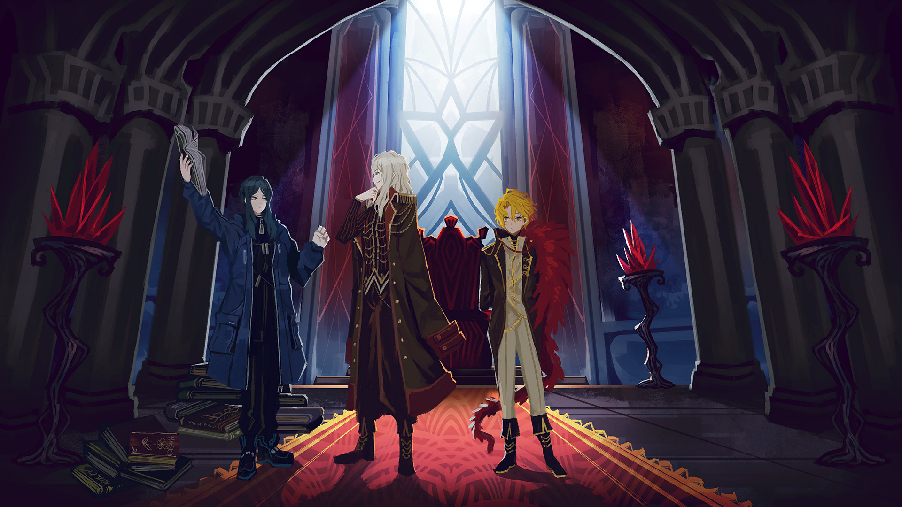
Bari telling stories about fixers
Within Don Quixote, this perspective is dramatically shifted. Don Quixote begins his dream of knighthood by himself, and Sancho only joins in after being convinced there is material gain to be found in being a govenor of his own land. The ending of Don Quixote's adventures end in a very different way as well, as the Knight of the White Moon defeats Don Quixote and has him pause his adventures, while Bari and Don Quixote in Limbus Company drew at the end of their 3 days of battle.
Additionally, while Don Quixote in Limbus Company passes the mantle of being a bloodfiend fixer to Sancho as his dying wish, Don Quixote in Don Quixote made a point to specifically sever himself from the books of knighthood, and would disown his niece if she ever married someone who believed in those ideals. This provides an interesting parallel for one of the identities that Sancho can wield in the game, as she has an identity called "The Manager of La Manchaland". In this mirror world, Sancho directly conspires with the other kindred to kill and take over Don Quixote's position of being a first kindred, as they found his neglect to be unbearable. This in turn led to the park never being sealed away, and the bloodfiends were able to continue their lives as usual.
It should be noted though that this world does not see Don Quixote renounce being a bloodfiend fixer, but rather sees Sancho take matters into her own hands.
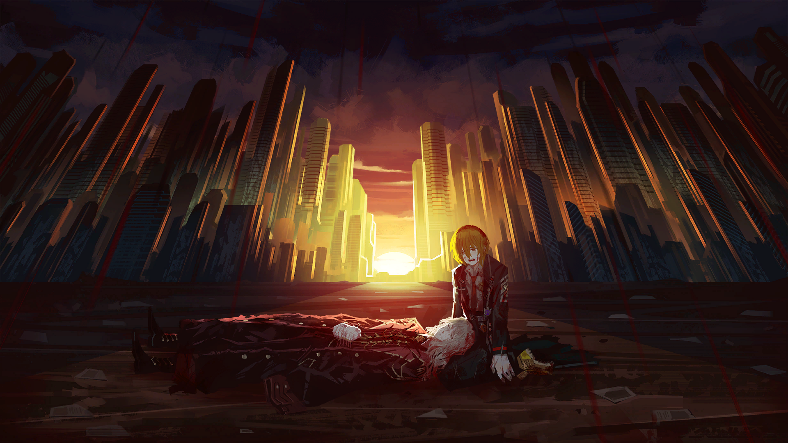
Don Quixote passing the mantle on to Sancho
Other notable differences in the duo is that Don Quixote's Don Quixote would often directly interfere with a scenario, and his interference would in turn bring harm to himself or Sancho. Within Limbus Company, this dynamic is inverted so that Don Quixote's passivity to his children's thirst for blood would cause untold amounts of suffering for them, as opposed to his direct actions as a fixer. If anything, the closest parallel can be seen in Sancho in her Don Quixote persona; the impulsive actions she takes is very reminiscent of the ones that her liteary counterpart would take in part 1 of the books, and conversely the consequences were just as severe for her.
Another significant difference between the two sources can be seen in Sancho's reception of Don Quixote's dream. In Limbus Company, Sancho resists Don Quixote's order to live on his dream as a bloodfiend fixer. This highlights how the concrete familial relationship between the two also places strong expectations on Sancho's ability to follow through on Don Quixote's dream. The pressure of succeeding, alongisde the disappointment of realizing what has become of their dream, was the reason why Sancho gave up on Don Quixote's dream in the first place; the only reason she returns to LCB is to continue figuring out how to solve the loneliness of the bloodfiends. Thus, a part of the "Dream Ending", if you will, stems from the parental pressure that Sancho faces as the sole hope for Don Quixote's dream.
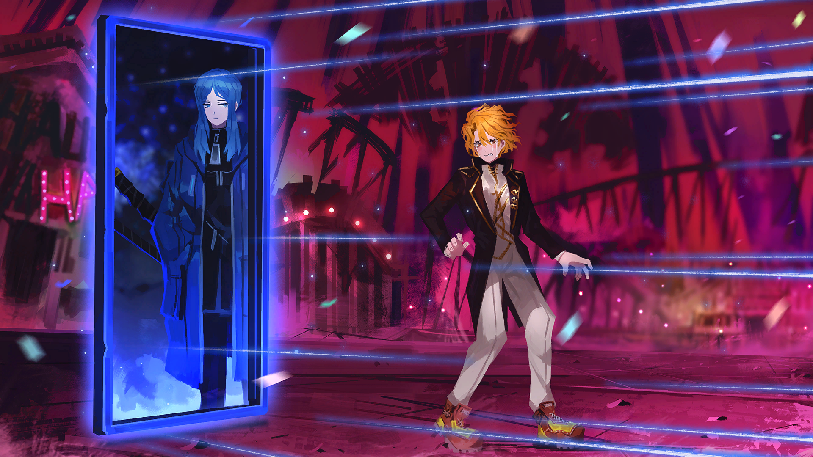
Sancho being forced to leave La Manchaland
Sancho in Don Quixote behaves in stark contrast to the game, as he began averse to the idea of faithfully following Don Quixote's dream until the very end, when he begins to doubt the boundaries between the lies and the truths that he spouted.
Don Quixote, as stated before, grew to detest his earlier actions and denounced them before he died. In Limbus Company, Don Quixote does express regret for his actions, but it is implied that it stems from his sorrow over the suffering he enforced on his children as opposed to the idea itself.
Conclusions
To conclude, beyond the major themes of achieving an impossible dream, and the social and physical costs that incurred unto Don Quixote, Sancho and those who were close to them, Limbus Company provides an incredibly interesting and nuanced take on the core themes of Don Quixote, and subverts these themes to provide a unique perspective on how the story plays out.